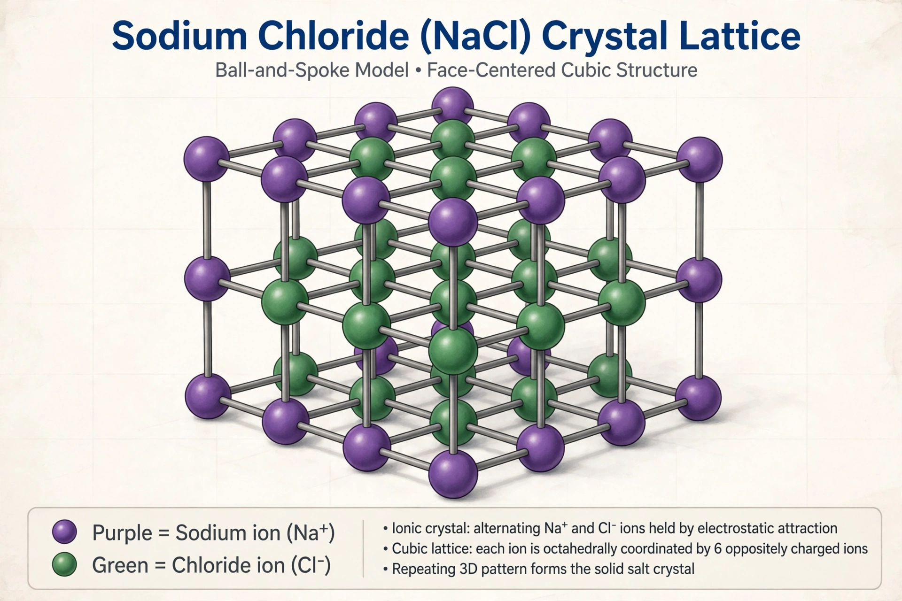

[Image placeholder: The rock-salt crystal structure of sodium chloride]**Sodium chloride** is an ionic compound with the chemical formula NaCl, representing a 1:1 ratio of sodium and chloride ions. It is the salt known in everyday life as **table salt** or common salt. Sodium chloride is the salt most responsible for the salinity of seawater and of the extracellular fluid of multicellular organisms.
NaCl forms white cubic crystals, dissolves readily in water (about 36 g per 100 mL at room temperature), melts at 801 °C and conducts electricity when molten or dissolved. It is obtained by mining rock salt (halite) and by evaporating seawater and brines. Uses span food seasoning and preservation, de-icing, water softening, and the chloralkali industry, which converts brine into chlorine, sodium hydroxide and hydrogen — foundational industrial chemicals. In the body, sodium is the principal extracellular cation, essential to nerve impulses and fluid balance, though excess dietary intake raises blood pressure. Salt is iodised in many countries to prevent iodine deficiency.
Each Na⁺ ion is surrounded octahedrally by six Cl⁻ ions and vice versa (the rock-salt structure), a standard first example in solid-state chemistry. Despite its formula, no discrete NaCl 'molecules' exist in the solid.